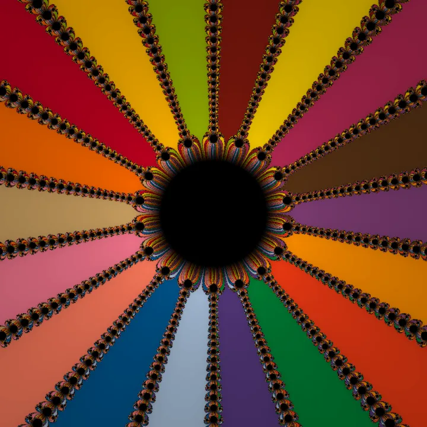

ryanjvig / newton fractals
Web-based Newton fractals
The Newton fractal visualizer uses Newton’s Method in the complex plane to generate Newton fractals. Many options are available to the user to explore different functions and formatting styles.
Example

Usage Guide
Visit https://ryanjvig.github.io/fractal.html to view the visualizer. Below are descriptions of each setting and feature the user may specify when working with this program. Currently, the mobile version of the page limits the features available for ease of use, so many features are currently only accessible from the desktop version or a sufficiently large mobile device. All features are available on the desktop version, and features available in the mobile version are noted below.
Function (Available on Mobile)
Specifies the function to use for the fractal. "z" must be used as the function variable. Must be parsable by mathjs's expression parser. May only contain polynomials and limited transcendentals (e^z, sin(z), cos(z), sinh(z), cosh(z)), all of which must be isolated as terms (besides their coefficient). Coefficients of terms can be any complex number. Exponent values that are not positive integers currently have limited support and may not function as intended.
Appearance Settings
Click this button to show/hide the appearance settings menu. Settings involve the way the canvas is colored, what part of the plane the canvas includes, and what aspect ratio the canvas uses.
Color scheme
Specifies the coloring method to use for the generated fractal. "Grayscale" will generate a fractal shaded by the iterations required to converge. "Color" will also shade by the iterations required to converge, but will also color each point that converges by the root it converges to. All root colors are (pseudo)randomly generated. Default value is "Color".
Fixed high contrast colors (Available on Mobile)
Check this box to ensure the first 19 roots found use high contrast colors when using the "Color" color scheme. High contrast colors used are Kelly's 22 colors of maximum contrast, excluding black, white, and gray (More can be found on this topic here: https://eleanormaclure.files.wordpress.com/2011/03/colour-coding.pdf). Uncheck this box to use all randomly generated colors instead. Checked by default.
Center point
Specifies the point in the complex plane that the generated image is centered around.
Width
Specifies the interval to use for the real axis ([-width/2, +width/2]). For example, the default width of 15 will generate an image with the real range [-7.5, 7.5]. The length of the imaginary axis will be scaled appropriately based on the current aspect ratio of the image.
Draw as square
Check this box to fix a 1:1 aspect ratio (equal height and width) for the generated image.
Reroll Colors button (Available on Mobile)
Click this button to redraw a colored fractal image with a new set of randomly generated root colors.
Precision Settings
Click this button to show/hide the precision settings menu. Allows specification of maximum iterations for the program to allow and the convergence tolerance value to use.
Max iterations
Specifies the maximum number of iterations the program may use at each point. If a point does not converge by the maximum number of iterations, it will be colored black. If a point does converge before the maximum number of iterations, it will be shaded by the ration between the number of iterations required to converge and the maximum number of iterations.
Tolerance
Specifies the convergence tolerance of Newton's method. Must be an integer n, and Newton's method will have a resulting convergence tolerance of 10^(-n). When generating Nova fractals, the sign of this integer will be flipped behind-the-scenes and used as the escape radius parameter for divergence.
Advanced Options
Click this button to show/hide the advanced options menu. Options include certain generalizations of Newton's method (which may fundamentally change how the picture is drawn/computed) and computing an estimated fractal dimension of the generated image using box countting.
Generalized iteration scalar
Specifies a complex-valued constant to scale the difference term of each iteration by. Specifically, specifies the constant "a" for our iteration equation
z_{n+1} = z_n - a(f(z_n) / f'(z_n)).
Nova fractal iteration offset
Specifies the offset to use when generating "Nova" fractals. If set to a nonzero value, the program will generate a Nova fractal, which follows the above iteration with the addition of a constant "c" at each step, giving us the iteration
z_{n+1} = z_n - a(f(z_n) / f'(z_n)) + c.
When generating Nova fractals, the program will look to color points that diverge rather than points that converge. The sign on the "precision" parameter (detailed below) will be flipped, with the resulting precision value being used as our escape radius that determines our divergence criteria.
Fixed quaternion projection
Specifies fixed quaternion coefficients that transforms the complex plane into a 2-dimensional cross section of the 4-dimension space the quaternions inhabit. Specifically, this specifies the coefficients "c" and "d" to hold fixed for quaternions in our plane, where quaternions are of the form
a + bi + cj + dk.
This will result in the use of quaternion arithmetic to calculate the resulting fractal, and is thus likely to be somewhat slower to generate.
Compute Fractal Dimension button
Click this button to compute an estimate of the current image's fractal dimension. The fractal dimension is estimated using box-counting. It's recommended to position the image entirely in the boundary region for the best estimate, as the Newton's fractal itself lies in the boundary set of Newton's method on the complex plane. Read more about box-counting dimension here: https://en.wikipedia.org/wiki/Minkowski%E2%80%93Bouligand_dimension
Box counting precision
Speficies how many boxes should be used to cover the width of the images (inversely related to the side length of each box). Must be a positive integer. The higher this number is, the more precise the estimate will be. Be careful to not increase this value too much (should be kept <1000), as the computation required for the box-counting estimate increases quadratically with this option.
Draw button (Available on Mobile)
Click this button to render the Newton fractal.
Reset button (Available on Mobile)
Click this button to reset settings and the current image to default values.
Save as PNG button (Available on Mobile)
Click this button to download the current image as a local file. The file will be saved as "fractal.png".
Disclaimer
There is seemingly very little literature available on Nova fractals and 2D projections of Newton fractals using fixed quaternion values. Implementations of these features were made with our best available understanding of this material, but may not be entirely accurate. Improved expression parsing and computation of transcendentals and non-positive integer powers is a future goal of this project, and a recognized limitation of this program in its current state. Thanks for taking a look!